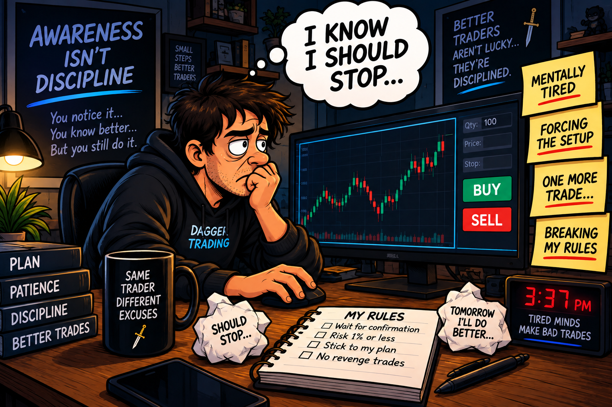

Trading Psychology
Awareness Isn't Discipline
Knowing you're losing control doesn't mean you've regained control.

You recognize the bad setup. You feel yourself getting emotional. You even think, “I should stop.” Then you take another trade.
1. Knowing Better Isn't the Same as Doing Better
As traders gain experience, they usually get better at recognizing their own bad habits. FOMO feels familiar. Revenge trading becomes easier to spot. You know when you're forcing a setup or getting careless.
That awareness matters. You can't correct a pattern you don't recognize.
But there is another step: changing what you do after you recognize it.
If you notice that you're breaking your rules and continue anyway, awareness has become observation rather than correction.
2. The Awareness Trap
Notice It
“I'm starting to force trades.”
Understand It
“I'm frustrated and my standards are slipping.”
Ignore It
“I know...but maybe just one more.”
Interrupt It
Recognize the signal and follow the rule you set beforehand.
3. The Inner Negotiation
Once emotion takes over, traders can become very good at arguing with their own rules.
- “This setup is close enough.”
- “I'll use smaller size.”
- “One more trade won't hurt.”
- “I can make back what I just lost.”
- “I'll stop after this one.”
4. Warning Signs
Before you can stop the behavior, you have to recognize your personal warning signs.
- You reject a setup, then talk yourself back into it.
- You know you're mentally tired but keep trading.
- You start entering from boredom.
- You stop waiting for confirmation.
- You increase risk trying to recover a loss.
- You hear yourself saying “one more.”
5. Turn Signals Into Rules
Once you know your warning signs, give each one a predetermined response.
- If I start forcing mediocre setups, then I step away.
- If I feel the urge to immediately win back a loss, then I take a cooldown.
- If my predetermined giveback limit is hit, then the session ends.
6. Remove the Debate
The point of a rule is to reduce the number of decisions you have to make when you're least qualified to make them.
Decide your response while you're calm. When the warning sign appears, you don't need another debate with yourself. You need to execute the response.
7. Build an Intervention
- Write down your most common warning signs.
- Give each one a specific response.
- Make the response simple enough to follow under stress.
- Use breaks, reduced access or a hard stop when needed.
- Review whether you actually followed the rule.
8. What Progress Looks Like
Progress often happens in stages:
- “I can't believe I did that again.”
- “I'm doing it again.”
- “I'm about to do it again.”
- “I recognize this. I'm stopping here.”
9. Key Takeaway
Don't just identify your warning signs. Decide in advance what happens when they appear.
10. Go Deeper (optional reading & practice)
The intention-action gap
Psychology has long studied the difference between intending to do something and actually doing it. Wanting to follow a plan is important, but intention alone does not guarantee action. That's the deeper idea behind this lesson: a trader can genuinely intend to be disciplined and still fail to act on that intention when pressure, temptation or emotion arrives.
Implementation intentions: the “if-then” idea
Psychologist Peter Gollwitzer's work on implementation intentions examines plans that connect a specific situation with a specific response: “If X happens, then I will do Y.” Research has found that this kind of advance planning can help people translate goals into action.
For a trader, that might become: “If I catch myself trying to immediately win back a loss, then I leave the screen for 10 minutes.” The trading example is ours; the underlying if-then planning concept comes from self-regulation research.
Why this is different from Self-Sabotage
Self-Sabotage focuses on the destructive pattern itself: why traders repeatedly undermine their own goals. Awareness Isn't Discipline starts one step later. You already recognize the pattern. The question is whether recognition produces a different action.
Why this connects with Decision Fatigue
Decision fatigue can make it harder to stick to your standards as a demanding session wears on. This lesson focuses on what happens once you notice that change. Instead of asking your tired or emotional mind to make another judgment call, a predetermined response can reduce the debate.
Build Your Response Plan
Pick three warning signs you recognize in your own trading and decide exactly how you will respond. Keep the response specific. “Be more disciplined” is not an action. “Step away for 10 minutes” is.
Your entries stay in this browser. Nothing is submitted to Dagger Trading.
My Response Plan
Awareness is the alarm. Your intervention is the response.
The goal is not to become better at explaining your mistakes. It's to become better at interrupting them.
Research & further reading
- Peter Gollwitzer's research and publications on implementation intentions, including Implementation intentions: Strong effects of simple plans — NYU Motivation Lab.
- Overview of implementation intentions and goal pursuit — Implementation Intentions chapter.
- Planning goal striving in advance — Setting One's Mind on Action.
Educational content only. “Awareness Isn't Discipline” is Dagger Trading's framing of a practical trading problem, not a formal psychological diagnosis or scientific term. The lesson draws on established research about goals, self-regulation and implementation intentions; it is not psychological or financial advice.